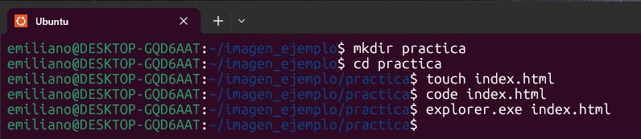
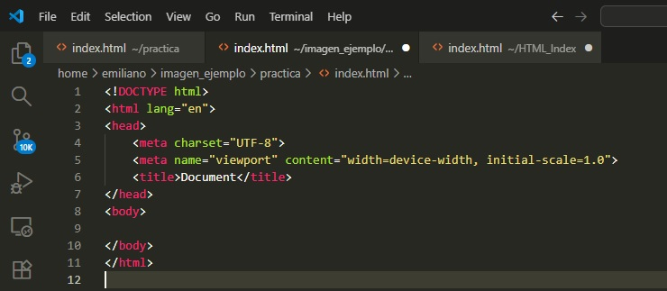

Introducción.
La idea de esta página es practicar HTML creando un resumen de lo que voy
aprendiendo, y modificarlo a medida que vaya adquiriendo nuevos conocimientos. Para esto, voy a contar a travez de texto, imagenes y links como voy creando este
sitio web e intentar describir con mis palabras los elementos y atributos que uso.
El comienzo fue en la terminal WSL2 donde tengo Ubuntu como Sistema Operativo
Desde la terminal que utiliza Bash como lenguaje de programación, cree un directorio
nuevo con el comando mkdir llamado "practica" que sera la carpeta de nuestra pagina
web. Luego con el comando touch cree el index.html y lo abri de dos
maneras para comenzar en este proyecto.Primero a travez del comando code para
abrirlo en VSC y luego con el comando explorer.exe para abrirlo en Chrome
(el comando "explorer.exe" en WSL2 abre el archivo en tu navegador web predeterminado)

Para tener una representacion visual de lo que hice anteriormente, simplemente cree
una carpeta nueva dentro de la carpeta "practica" llamada "img" para guardar todas las
imagenes que necesite para la web a partir de ahora.
Ilustración visual en terminal
Hasta el momento, los comandos que recuerdo y que mas uso en la terminal son los siguientes:
- (cd): para acceder a los directorios
- (cd ..): para salir del escritorio actual al escritorio contenedor
- (ls): listado de elementos del escritorio actual
- (touch): para crear un archivo
- (code): para abrir un archivo en VSC
- (explorer.exe): para abrir un archivo en mi explorador predeterminado
- (rm -r): para eliminar directorios/archivos (y sus variantes como rm y rm -R)
- (cat): para visualizar el contenido de un archivo en la terminal
- (clear): para limpiar la terminal (uso mayormente su atajo: Ctrl + L)
- (exit): para salir de la terminal (uso mayormente su atajo: Ctrl + C)
Una vez que tengo mi archivo index.html abierto en VSC y en Chrome,
es hora de empezar a crear mi sitio web con lo poco que se de HTML.
Lo bueno de VSC code es que con solo escribir "! + Enter", va a generar la estructura
básica de un archivo html como se ve a continuación.

En esta estructura basica contamos de 3 partes importantes, el tipo de documento (!DOCTYPE), el head y el body.
- !DOCTYPE: Le indica al VSC el formato y version del archivo que esta abriendo, es indispensable para que VSC entienda los tags como ordenes.
- htlm: Es la etiqueta raíz que contiene todo el contenido del documento.
- head: Contiene metadatos e informacion de la página, no es contenido visible en la página
- meta charset="UTF-8: Es un metadato indispensable ya que contiene el sistema de codificación universal usado en todos los editores.
- meta name="viewport" content="width=device-width, initial-scale=1.0": Metadato que ajusta el ancho de la pagina a cada dispositivo
y establece el zoom por defecto al 100%
- title: Titulo del pié de página, no es contenido visible de la página pero es importante ya que los buscadores encuentran tu
página a travez de el
- body: Donde se aloja todo el contenido visible de la pagina.